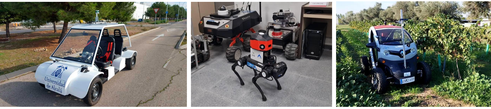
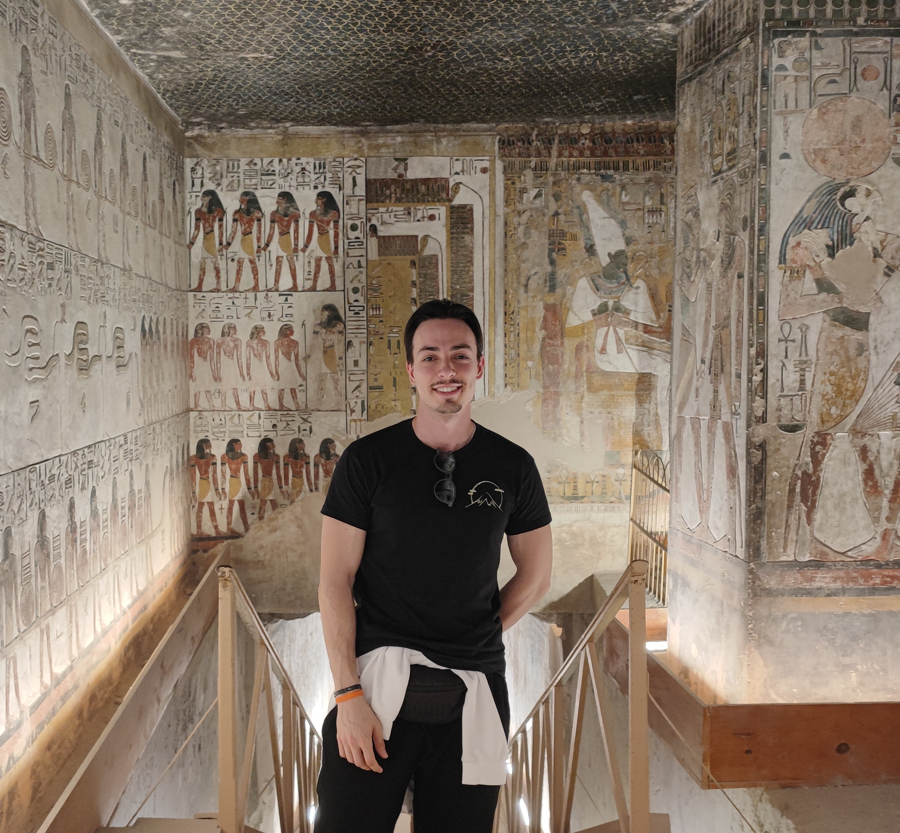
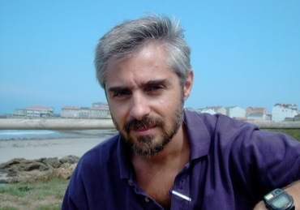
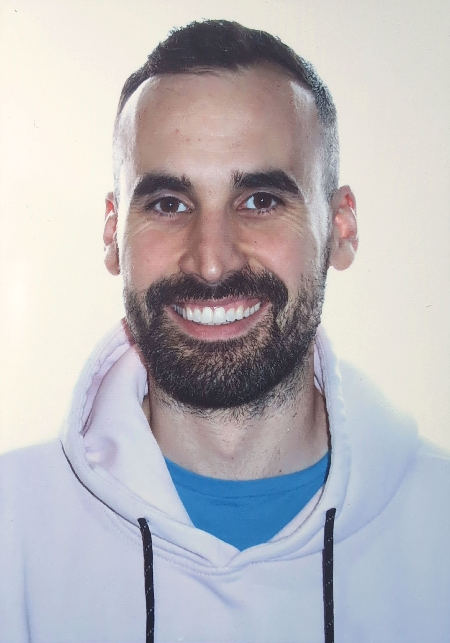

iRoboCity2030 Summer School 2026: ROS 2, AI and Field Robotics
The iRoboCity2030 Summer School 2026, titled “ROS2: AI and Field Robotics”, offers university students from around the world an intensive one-week experience focused on the technologies driving the next generation of intelligent and autonomous robots.
- Dates: 22–26 June 2026 (5-day programme)
- Location: Madrid, Spain
- Format: On‑site
- Language: English
- Target audience: Undergraduate and graduate students

About the Summer School
The programme combines theoretical and practical training in ROS 2 (Robot Operating System 2), Artificial Intelligence, and Field Robotics. Teaching activities are led by researchers from the main universities and research centres of Madrid: Universidad Rey Juan Carlos (URJC), Universidad de Alcalá (UAH), Universidad Politécnica de Madrid (UPM), Universidad Autónoma de Madrid (UAM), Universidad Complutense de Madrid (UCM), Universidad Carlos III de Madrid (UC3M), and the Spanish National Research Council (CSIC).
Programme
Throughout five days, participants progress from the fundamentals of ROS 2 to the application of AI techniques across different domains of field robotics. The schedule below is indicative and may be refined.
Day 1 – Fundamentals of ROS 2 and introductory concepts
Technical foundations of the course: ROS 2 ecosystem and architecture, nodes, topics, and development tools. Hands-on exercises include environment setup, inter-process communication, and basic simulation workflows.
Day 2 – Autonomous vehicles
Perception, planning, and control for intelligent vehicles: modular architectures, AI-based perception and decision-making, and integration with realistic simulators. Practical sessions cover machine-learning and navigation algorithms in virtual environments.
Day 3 – Quadruped robots
Legged robotics: dynamic control, stability, and locomotion strategies for quadruped platforms. Sessions combine theory, demonstrations, and experiments in simulation and on real robots, including current AI trends in locomotion and behaviour learning.
Day 4 – Agricultural robotics and natural environments
Field robotics for agricultural, inspection, and environmental monitoring tasks. Topics include operation in unstructured environments, variable perception conditions, sensor integration, flexible manipulation, and distributed control.
Day 5 – Final project and closing session
Presentation of ROS 2 projects developed throughout the week. Student teams showcase results and share insights, followed by a discussion, diploma ceremony, and closing event.
Keynotes

Steve Macenski (OpenNavigation)
Plenary title: Nav2 & ROS 2 Overview: Techniques & Applications Powering an Industry
Steve Macenski is the CEO of Open Navigation and lead developer / maintainer on ROS 2's Nav2 navigation framework. He has spent a career working on navigation solutions and has built many of the common references and high-performance algorithms that power academic research and industry today.

Davide Faconti
Plenary title: To be confirmed
Davide Faconti is the creator of BehaviorTrees.CPP and Groot, widely used tools for developing robotic applications based on Behaviour Trees.
His work focuses on scalable robot software architectures and developer tooling that help teams design, debug, and maintain complex robot behaviours.
He is well known for translating practical engineering needs into reusable open-source components adopted by a broad robotics community.
Instructors
The Summer School is taught by researchers from URJC, UAH, UPM, UAM, UCM, UC3M, and CSIC. The list below reflects the teaching programme and may be updated.

Carlos Balaguer
UC3M
Field robotics and real-world deployment perspectives.

Francisco Martín
URJC
ROS 2 fundamentals and hands-on labs.

José M. Cañas
URJC
AI for autonomous driving; ROS 2 projects and mentoring.

Luis Miguel Bergasa
UAH
Introduction to AI for autonomous vehicles.

Fabio Sánchez
UAH
CARLA-based perception hands-on sessions.

Miguel Antunes
UAH
CARLA integration and practical perception pipelines.

Santiago Montiel
UAH
ROS 2 for scaled autonomous racing cars.

Rodrigo Gutiérrez
UAH
ROS 2 and control for scaled racing platforms.

Christyan Cruz
UPM
Quadruped locomotion, perception, and hands-on labs.

Antonio Barrientos
UPM
Opening remarks (Wednesday) and institutional welcome.

Roemi Fernández
CSIC
AI and robotics for agricultural applications.

Raúl Fernández
UCM
Reinforcement learning for robot control.

Dionisio Andújar
CSIC
AI and agricultural robotics hands-on learning.

Hugo Moreno
CSIC
AI and agricultural robotics hands-on learning.
Luis Emmi
CSIC
AI and agricultural robotics hands-on learning.

Juan Jesús Roldán
UAM
AI explainability in robotics.

José Luis Jorro
UAM
AI explainability in robotics.

Fernando Quevedo
UC3M
ROS 2 for multiagent aerial robotics.
Learning Approach
The pedagogical approach is practical and collaborative. Participants learn by doing, combining knowledge of AI, control, and perception with direct implementation in ROS 2, in both simulators and real robotic platforms. Beyond its technical dimension, the school promotes intercultural collaboration and international teamwork, fostering a dynamic environment for learning and experimentation.
Organisation
This summer school is part of the iRoboCity2030 initiative, the Robotics Innovation Network of the Madrid Region. It represents a joint effort by leading universities and research institutions to promote advanced training and knowledge transfer in robotics and artificial intelligence.
Venue
The Summer School will take place at the Puerta de Toledo campus of Universidad Carlos III de Madrid (UC3M), located in the city centre of Madrid and well connected by public transport.
Located in the heart of Madrid, the Puerta de Toledo campus is home to the Postgraduate Centre of Universidad Carlos III de Madrid. This fully renovated building features multimedia classrooms, a lecture hall, workspaces with Wi‑Fi access, a library, a cafeteria, and general university facilities.
The Puerta de Toledo (1827) gate is easy to recognise in the middle of the square as a grand historic entrance to Madrid. The campus is in the La Latina neighbourhood, very close to areas of tourist interest such as Austrias, Sol–Gran Vía, Lavapiés, and Madrid Río.
Address: Universidad Carlos III de Madrid, Ronda de Toledo, 1, 28005 Madrid, Spain.
Location
Universidad Carlos III de Madrid
Campus Madrid – Puerta de Toledo
Ronda de Toledo, 1
28005 Madrid, Spain
How to get there
By metro: Puerta de Toledo (line 5)
By bus: 002, 3, 23, 17, 148, C1, C2
By suburban train: Pirámides (lines C1, C7 and C10) and Embajadores (line C5)
Registration
Registration details will be announced shortly. In the meantime, interested participants may express their interest or request information by email.
Contact: irobocity2030@gmail.com
More Information
Further details regarding dates, fees, accommodation, and the detailed programme will be published on this website as they become available. Updates will also be disseminated through the iRoboCity2030 network and participating institutions.